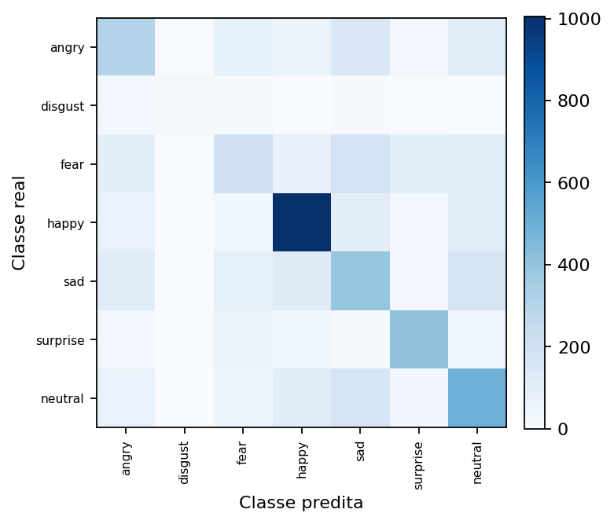
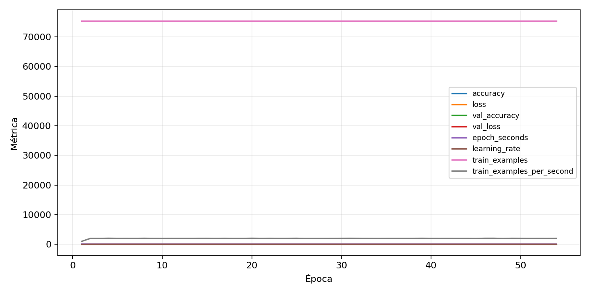

| n_samples | 5382 |
|---|---|
| loss | 1.2571990489959717 |
| accuracy | 0.5274990709773318 |
| balanced_accuracy | 0.47305003755868136 |
| macro_f1 | 0.4824961444140708 |


| Índice | Classe | Suporte | Precisão | Recall | F1 |
|---|---|---|---|---|---|
| 0 | angry | 743 | 0.43422913719943423 | 0.41318977119784656 | 0.42344827586206896 |
| 1 | disgust | 82 | 0.59375 | 0.23170731707317074 | 0.3333333333333333 |
| 2 | fear | 768 | 0.37570093457943926 | 0.26171875 | 0.3085188027628549 |
| 3 | happy | 1348 | 0.7082452431289641 | 0.7455489614243324 | 0.7264185037947236 |
| 4 | sad | 911 | 0.38872691933916426 | 0.43907793633369924 | 0.4123711340206186 |
| 5 | surprise | 600 | 0.646875 | 0.69 | 0.6677419354838708 |
| 6 | neutral | 930 | 0.48333333333333334 | 0.5301075268817205 | 0.5056410256410256 |
{"adapter":"fer2013","balance_mode":"all_raw","class_names":["angry","disgust","fear","happy","sad","surprise","neutral"],"dataset":"fer2013","dataset_options":{},"dataset_root":"/home/msduda/datasets-tcc/fer2013","native_channels":1,"normalization":"zscore","num_classes":7,"protocol":{"checkpoint_monitor":"val_macro_f1","dtype_policy":"mixed_float16","early_stopping":{"patience":10,"restore_best_weights":true},"evaluation_augmentation":false,"input_channels":"native","optimizer":"Adam","pretrained_weights":false,"reduce_lr_on_plateau":{"factor":0.3,"min_lr":1e-07,"patience":4},"resize":"proportional_padding","test_time_augmentation":false,"training_from_scratch":true},"seed":42,"source_fingerprint":"3c69743206ae28880b6ca82a3a19b8d6c0ca0b7296b7ecc703aa8a76e40db6e0","source_manifest":{"class_names":["angry","disgust","fear","happy","sad","surprise","neutral"],"joined_samples":35887,"metadata":{"file":"/home/msduda/datasets-tcc/fer2013/fer2013.csv","layout":"fer2013-csv"},"name":"fer2013","native_channels":1,"source_path":"/home/msduda/datasets-tcc/fer2013","splits":{"test":3589,"train":28709,"validation":3589},"target_size":64},"target_size":64,"test_fraction":0.15,"train_fraction":0.7,"training":{"augmentation":{"brightness_delta":0.03,"contrast_lower":0.92,"contrast_upper":1.08,"cutout_max_frac":0.08,"cutout_prob":0.25,"flip_lr":true,"noise_std":0.005,"translate_frac":0.05,"zoom_max":1.04,"zoom_min":0.96},"batch_size":512,"default_image_size":64,"dtype_policy":"mixed_float16","early_stopping_patience":10,"extra_fraction":2.0,"image_size_overrides":{"gtsrb":128},"keras_verbose":1,"learning_rate":0.0003,"max_epochs":100,"preprocess_cache_max_mib":2048,"reduce_lr_factor":0.3,"reduce_lr_min_lr":1e-07,"reduce_lr_patience":4,"shuffle_buffer_max_mib":1024},"validation_fraction":0.15}
{"epochs_completed":54,"epochs_recorded":54,"evaluation_seconds":8.085664837999502,"fit_seconds_current_attempt":2149.9511255929974,"max_epoch_seconds":76.54366225900594,"max_epochs":100,"mean_epoch_seconds":38.082941454684324,"mean_train_examples_per_second":1998.3363901801272,"median_train_examples_per_second":2015.456836065508,"min_epoch_seconds":36.80995361600071,"selected_checkpoint":"/mnt/e/tcc-benchmark/outputs/remaining-ram-capped/fer2013/runs/fer2013__zscore__all_raw__seed-42/checkpoints/best.keras","total_seconds":2056.4788385529537,"training_seconds":2056.4788385529537,"wall_seconds_current_attempt":2170.879568888995}
{"elapsed_seconds":2170.925514300994,"event_counts":{"data_preparation_end":1,"data_preparation_start":1,"epoch_end":54,"evaluation_end":1,"evaluation_start":1,"fit_end":1,"fit_start":1,"periodic":428,"run_completed":1,"train_start":1},"generated_at":"2026-08-02T10:39:11.428+00:00","gpu_backend":"pynvml","interval_seconds":5.0,"metrics":{"cpu_percent":{"count":490,"max":28.0,"mean":8.013061224489796,"min":0.0,"p50":8.2,"p95":8.5},"disk_data_free_bytes":{"count":490,"max":998259023872.0,"mean":998258869168.5878,"min":998258860032.0,"p50":998258868224.0,"p95":998258868224.0},"disk_data_percent":{"count":490,"max":2.7,"mean":2.7,"min":2.7,"p50":2.7,"p95":2.7},"disk_data_total_bytes":{"count":490,"max":1081101176832.0,"mean":1081101176832.0,"min":1081101176832.0,"p50":1081101176832.0,"p95":1081101176832.0},"disk_data_used_bytes":{"count":490,"max":27849961472.0,"mean":27849952335.412247,"min":27849797632.0,"p50":27849953280.0,"p95":27849953280.0},"disk_output_free_bytes":{"count":490,"max":248513937408.0,"mean":248501391000.5551,"min":248500248576.0,"p50":248501030912.0,"p95":248501213388.8},"disk_output_percent":{"count":490,"max":75.2,"mean":75.2,"min":75.2,"p50":75.2,"p95":75.2},"disk_output_total_bytes":{"count":490,"max":1000186310656.0,"mean":1000186310656.0,"min":1000186310656.0,"p50":1000186310656.0,"p95":1000186310656.0},"disk_output_used_bytes":{"count":490,"max":751686062080.0,"mean":751684919655.445,"min":751672373248.0,"p50":751685279744.0,"p95":751685988352.0},"elapsed_seconds":{"count":490,"max":2170.869596,"mean":1090.8102618020407,"min":0.032188,"p50":1091.4111914999999,"p95":2078.9072023000003},"gpu_count":{"count":490,"max":1.0,"mean":1.0,"min":1.0,"p50":1.0,"p95":1.0},"gpu_memory_percent":{"count":490,"max":53.9121150970459,"mean":53.601376280492666,"min":39.960670471191406,"p50":53.9090633392334,"p95":53.9090633392334},"gpu_memory_total_bytes":{"count":490,"max":8589934592.0,"mean":8589934592.0,"min":8589934592.0,"p50":8589934592.0,"p95":8589934592.0},"gpu_memory_used_bytes":{"count":490,"max":4631015424.0,"mean":4604323162.906122,"min":3432595456.0,"p50":4630753280.0,"p95":4630753280.0},"gpu_temperature_c":{"count":490,"max":58.0,"mean":53.542857142857144,"min":40.0,"p50":54.0,"p95":57.0},"gpu_utilization_percent":{"count":490,"max":75.0,"mean":32.05714285714286,"min":4.0,"p50":35.0,"p95":62.55000000000001},"process_cpu_percent":{"count":490,"max":388.0,"mean":96.43285714285715,"min":0.0,"p50":100.6,"p95":102.9},"process_read_bytes":{"count":490,"max":317468672.0,"mean":317298512.45714283,"min":309014528.0,"p50":317468672.0,"p95":317468672.0},"process_rss_bytes":{"count":490,"max":3180523520.0,"mean":3019813323.755102,"min":1134739456.0,"p50":3061520384.0,"p95":3084783616.0},"process_vms_bytes":{"count":490,"max":47742128128.0,"mean":47525600126.432655,"min":39685271552.0,"p50":47658364928.0,"p95":47659413504.0},"process_write_bytes":{"count":490,"max":1241088.0,"mean":1220541.1265306124,"min":4096.0,"p50":1241088.0,"p95":1241088.0},"ram_available_bytes":{"count":490,"max":15339315200.0,"mean":13621475027.069387,"min":13463654400.0,"p50":13579073536.0,"p95":13638205440.0},"ram_percent":{"count":490,"max":19.0,"mean":18.035714285714285,"min":7.7,"p50":18.3,"p95":18.4},"ram_total_bytes":{"count":490,"max":16619089920.0,"mean":16619089920.0,"min":16619089920.0,"p50":16619089920.0,"p95":16619089920.0},"ram_used_bytes":{"count":490,"max":3155435520.0,"mean":2997614892.930612,"min":1279774720.0,"p50":3040016384.0,"p95":3056451993.6}},"sample_count":490,"schema_version":1}